2020 — 2026
Ulsan National Institute of Science and Technology (UNIST)
B.S. in Mechanical Engineering
ABOUT ME
I received my B.S. in Mechanical Engineering from UNIST in August 2026. My research interests lie in autonomous driving and robotics. I am interested in applying Vision-Language Models (VLMs) and World Models to learning-based autonomous systems in these fields.
BACKGROUND
B.S. in Mechanical Engineering
SELECTED WORK
Selected projects focusing on autonomous driving, robotics, and learning-based intelligent systems.
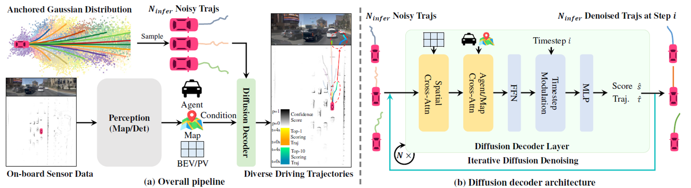
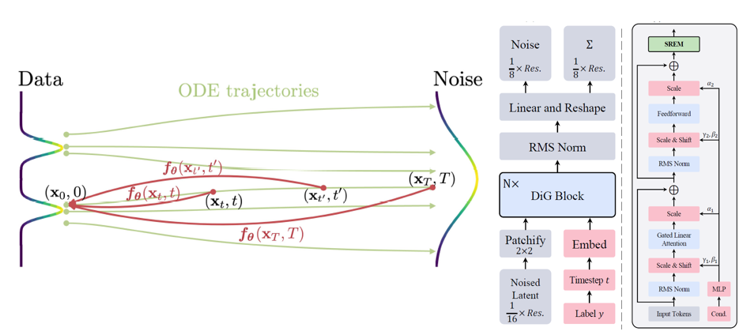
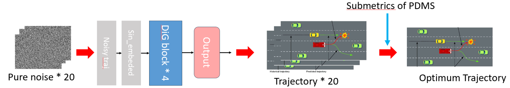
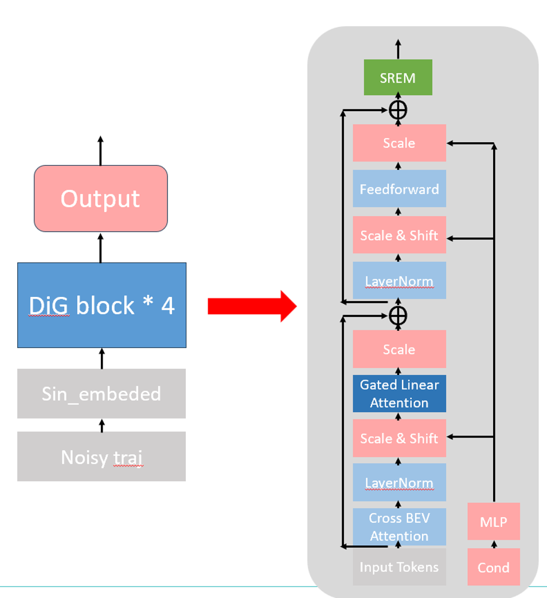
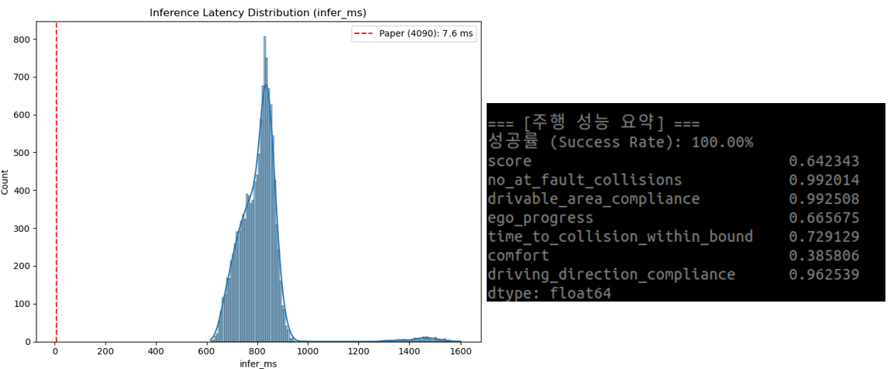
Investigated the real-time performance of DiffusionDrive for end-to-end autonomous driving. I introduced a DiG-based backbone and a consistency-model-based training strategy into the trajectory generation module, and evaluated the modified pipeline on the NAVSIM benchmark.
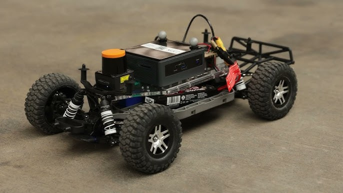
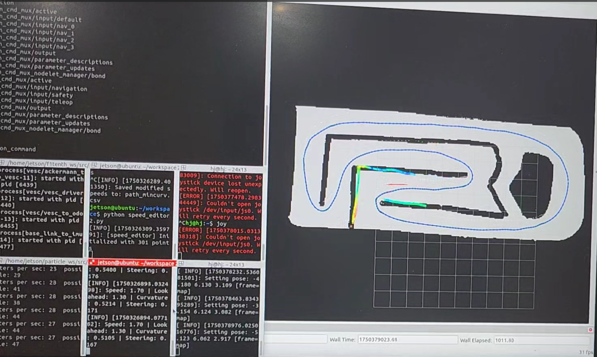
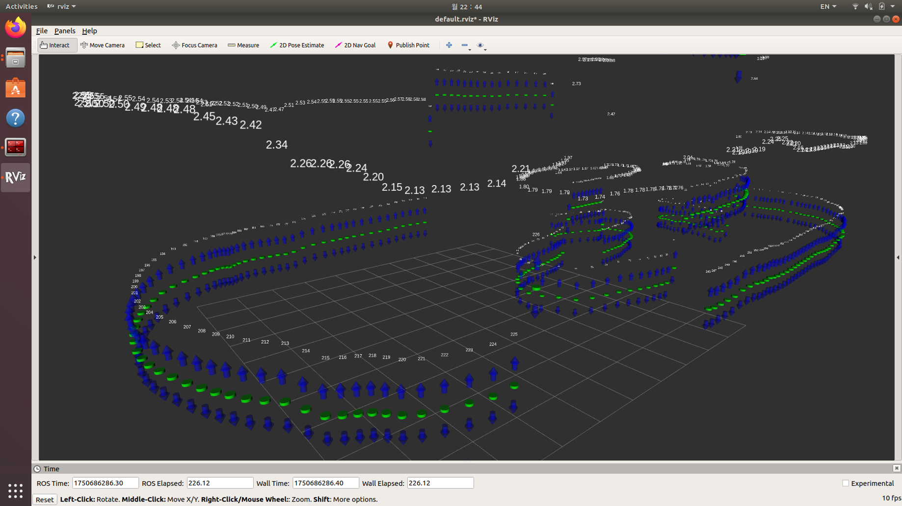
Developed and validated path tracking and vehicle-control components for an F1TENTH autonomous racing platform through repeated real-vehicle testing.
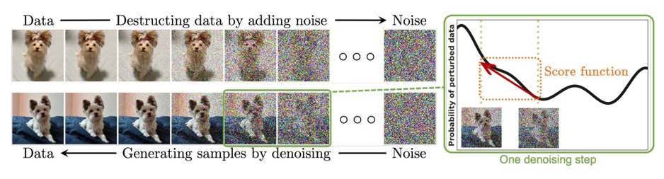
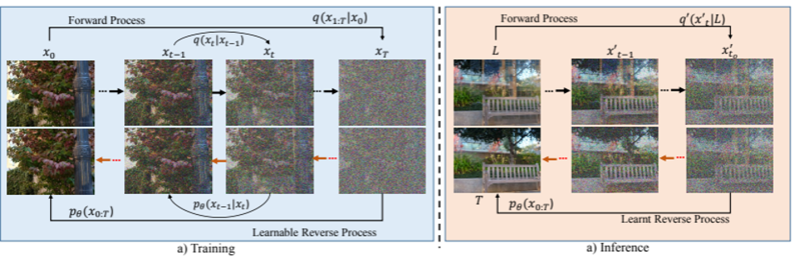
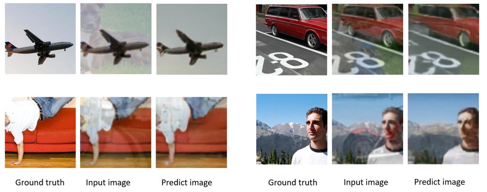
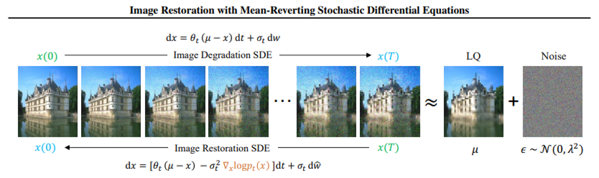
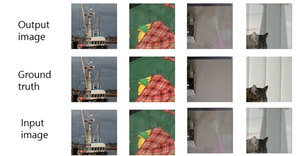
Investigated diffusion-based approaches for removing reflections from real-world images. Reproduced a prior diffusion-based reflection removal method and explored an IR-SDE-based approach for image restoration.
EXPERIENCE
Robotics & Mobility Lab, UNIST
Worked on improving the real-time performance of a diffusion-based end-to-end autonomous driving model.
High Assurance Mobility Control Lab, UNIST
Worked on autonomous driving algorithms for an F1TENTH racing platform.
Visual Information Processing Lab, UNIST
Conducted research on AI-based reflection removal using diffusion models through the Undergraduate Interdisciplinary Research Project (UIRP).
TRAINING
Autonomous Driving Track
TECHNICAL SKILLS
Python, C++, MATLAB
ROS, RViz, Path Planning, Vehicle Control, Localization
PyTorch, Deep Learning, Reinforcement Learning, Diffusion Models
F1TENTH, Linux, Git, CATIA